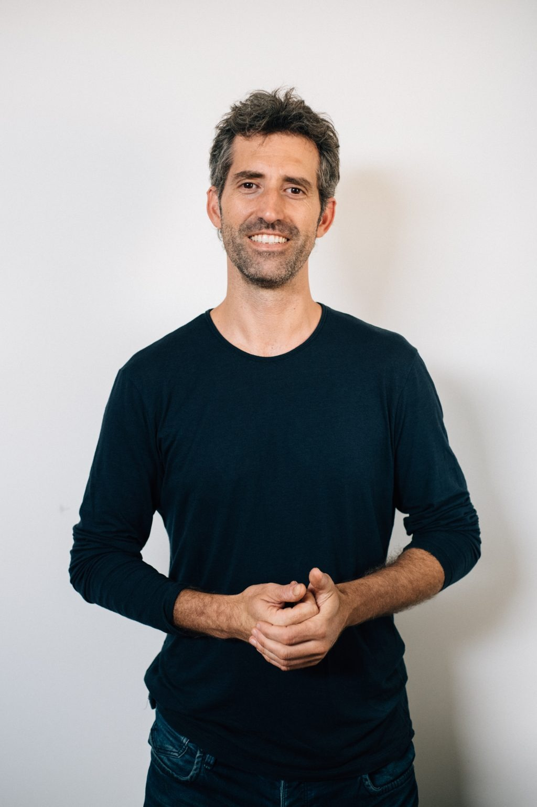
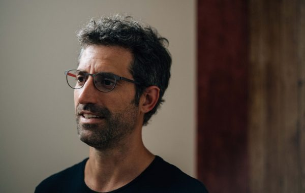
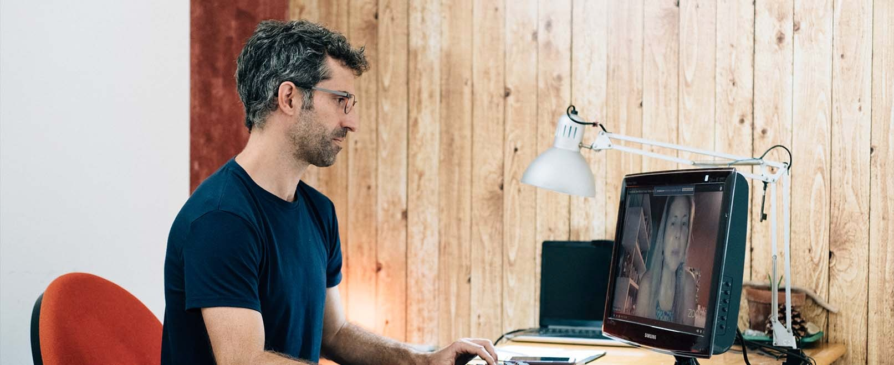
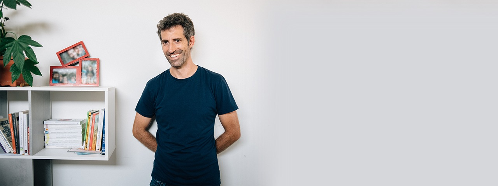

Lo emocional
Lo que sientes realmente. Las emociones que se activan una y otra vez y aún no has podido nombrar.
"Yo también pasé por ese proceso. Y fue ahí donde empezó todo."

Me esforzaba demasiado por agradar, sobre todo en mis relaciones. Repetía patrones sin darme cuenta, con una autoestima baja que no me permitía sentirme a gusto conmigo mismo ni reconocer mis propias capacidades.
Hasta que una crisis profunda a los 25 años me obligó a parar y empezar a mirar hacia dentro.

Fue a través de ese momento de tristeza, y de empezar un proceso terapéutico, cuando entendí algo clave:
No era solo lo que me pasaba, sino todo lo que había aprendido, heredado y repetido sin darme cuenta.
Ese proceso me llevó a reconstruir mi forma de verme, entender mis patrones y empezar a vivir con más coherencia. Y es desde ahí desde donde hoy acompaño a otras personas.

No se trata de convertirte en alguien distinto,
sino de dejar de vivir desde lo que aprendiste
y empezar a habitar lo que realmente eres.
Trabajo desde una psicología integrativa que tiene en cuenta cuatro dimensiones que se sostienen entre sí.
Lo que sientes realmente. Las emociones que se activan una y otra vez y aún no has podido nombrar.
Cómo piensas, qué te dices y por qué entras en bucles que no llegan a ningún sitio.
Lo que haces, lo que evitas y lo que repites sin darte cuenta en las situaciones difíciles.
Lo que has heredado sin darte cuenta: lealtades, miedos y mandatos familiares que aún operan en ti.

Vivo en un entorno natural donde encuentro calma, claridad y conexión. Eso me devuelve siempre a lo esencial — y es la misma actitud con la que acompaño cada proceso.
No creo en soluciones rápidas ni en que alguien externo venga a «arreglarte». Creo en hacerlo juntos, pero con tu compromiso en el centro.
Ver programa de 7 semanasAsumir tu parte en lo que sientes, en lo que repites y en lo que puedes cambiar.
Ver lo que no quieres ver. Mirarlo sin juicio. Comprenderlo sin huir.
Ir al origen, no quedarnos en la superficie. Sostener el proceso el tiempo que necesite.
Reserva tu sesión de reconocimiento gratuita. Hablamos de tu momento y vemos si este proceso es para ti.
Reservar mi sesión gratis